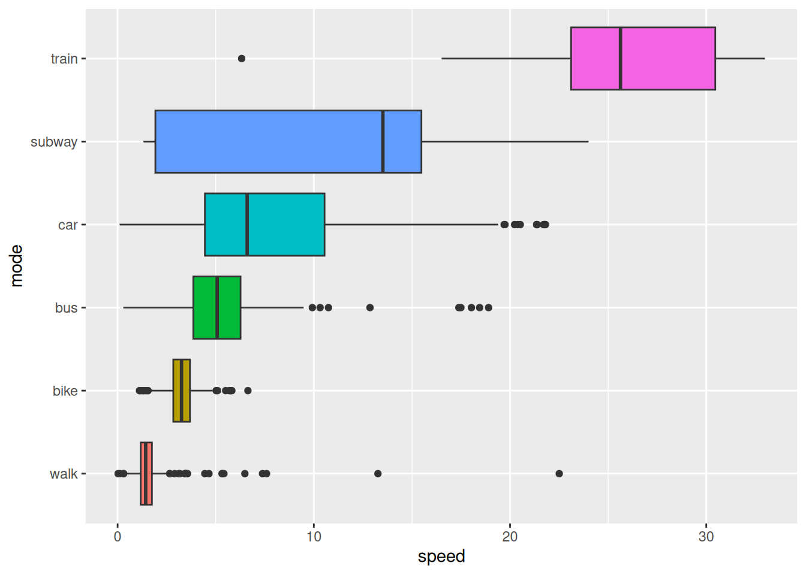
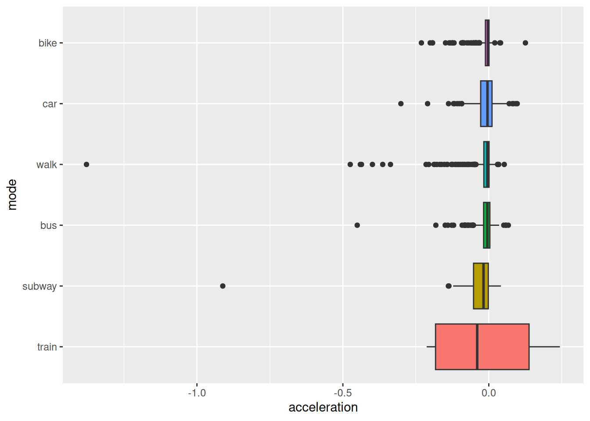
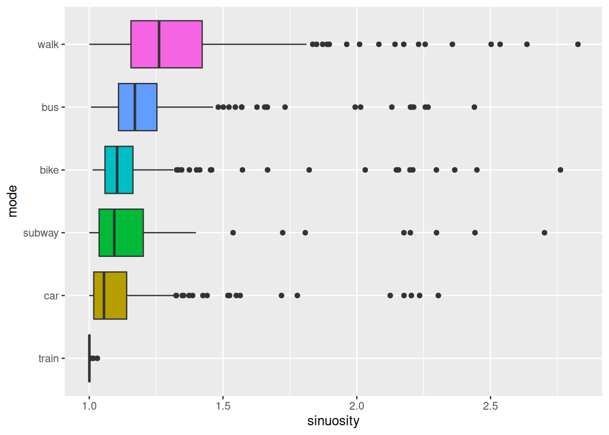
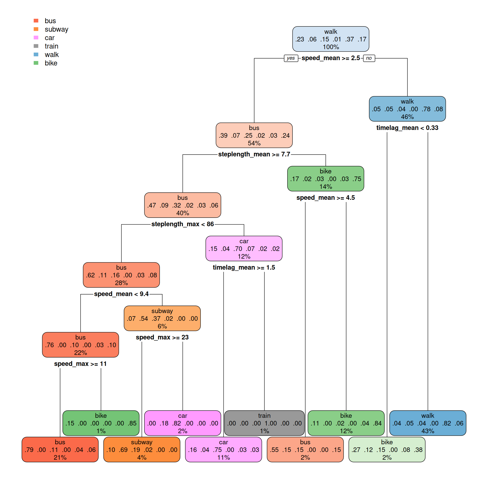

library(sf) # for spatial data handling
library(forcats) # for factor handling
library(dplyr) # for data manipulation
library(zoo) # for rolling window functions
library(ggplot2) # for generic plotting
library(rpart) # for building the model
library(rpart.plot) # for plotting the model3 Step-by-Step Instructions
3.1 Step 1: Load necessary libraries
To solve this task, we will use the following libraries. Instll these from CRAN using install.packages()
We also need the newest version of tmap. Install this from github using the R package remotes (install if neccesary)
# remotes::install_github("r-tmap/tmap")
library(tmap) # for spatial maps3.2 Step 2: Load the data
The dataset tracks_1.gpkg contains the training, testing and validation data as separate layers. We will load the training data and the testing data, and then combine them into a single dataset.
# List layers in the geopackage
st_layers("data/tracks_1.gpkg")Driver: GPKG
Available layers:
layer_name geometry_type features fields crs_name
1 training Point 501432 5 WGS 84 / UTM zone 50N
2 testing Point 262851 5 WGS 84 / UTM zone 50N
3 validation Point 240449 4 WGS 84 / UTM zone 50Ntraining_dataset <- read_sf("data/tracks_1.gpkg", layer = "training") |>
mutate(data = "training")
testing_dataset <- read_sf("data/tracks_1.gpkg", layer = "testing") |>
mutate(data = "testing")
full_dataset <- bind_rows(training_dataset, testing_dataset)Let’s visualize the data as a map. The package tmap is very handy for this task.
full_dataset |>
tm_shape() +
tm_dots() +
tm_basemap("CartoDB.Positron")
3.3 Step 3: Feature engineering
Feature engineering is a crucial step in preparing data for analysis and modeling. It involves creating new variables, or features, that capture important patterns or relationships in the data. Well-designed features can enhance the performance of machine learning models by making the relevant information more accessible.
In this task, we aim to enrich the GPS dataset with features derived from the spatial and temporal relationships between consecutive points within each trajectory. Specifically, we will compute metrics such as the distance between consecutive points (step length), the time difference between consecutive timestamps (time lag), and the average speed over these intervals. These features provide valuable insights into movement behavior and are essential for distinguishing between different transportation modes.
By engineering these features, we transform raw GPS data into a more informative format, setting the stage for building predictive models.
3.3.0.1 Speed
full_dataset <- full_dataset |>
mutate(
steplength = as.numeric(st_distance(lead(geom), geom, by_element = TRUE)),
timelag = as.numeric(difftime(lead(datetime), datetime, units = "secs")),
speed = steplength / timelag,
.by = track_id
)To understand the relationship between movement speed and transportation modes, we will summarize and visualize the dataset. By analyzing the average speeds for different modes of transportation, we can identify distinct patterns that might aid in differentiating between them.
In this step, we compute the mean speed for each combination of transportation mode and track, ensuring that missing values do not skew the results. Afterward, we reorder the transportation modes based on their average speeds, making the visualization more intuitive. Finally, we create a boxplot to display the speed distributions for each mode, highlighting the variability and central tendencies within the data.
This analysis provides a clear overview of how speed varies by transportation mode, offering valuable insights for feature interpretation and model development.
full_dataset |>
st_drop_geometry() |>
summarise(
speed = mean(speed, na.rm = TRUE),
.by = c(mode, track_id)
) |>
mutate(
mode = fct_reorder(mode, speed)
) |>
ggplot() +
geom_boxplot(aes(speed, mode, fill = mode)) +
theme(legend.position = "none")

Note that Figure 3.1 shows that the average speed per segment varies significantly between different transportation modes. This information can be used to distinguish between modes based on speed-related features on a per segment basis. However, this might not help to distinguish transport mode on a per point basis.
3.3.0.2 Acceleration
Acceleration, the rate of change in speed over time, is a valuable feature for understanding movement dynamics. Unlike speed, which provides information about the magnitude of motion, acceleration captures changes in motion - whether an object is speeding up, slowing down, or maintaining a constant velocity.
This feature is particularly useful for distinguishing transportation modes. For example, walking and cycling often exhibit more frequent changes in acceleration compared to driving or taking a bus, which tend to involve smoother transitions in speed. By incorporating acceleration into our analysis, we gain a deeper understanding of movement patterns and improve the ability to differentiate between modes of transportation.
full_dataset <- full_dataset |>
mutate(
acceleration = (lead(speed) - speed) / timelag,
.by = track_id
)Let’s have a look at the distribution of acceleration for different transportation modes on a per segment level.
full_dataset |>
st_drop_geometry() |>
summarise(
acceleration = mean(acceleration, na.rm = TRUE),
.by = c(mode, track_id)
) |>
mutate(
mode = fct_reorder(mode, acceleration)
) |>
ggplot() +
geom_boxplot(aes(acceleration, mode, fill = mode)) +
theme(legend.position = "none")

3.3.0.3 Sinuosity
Sinuosity is a measure of the curvature of a path, and can be defined as the ratio between the actual traveled distance and the straight-line distance between the start and end points. A perfectly straight path has a sinuosity of 1, while more winding paths have higher sinuosity values.
This feature provides valuable insights into movement behavior, as different transportation modes often exhibit distinct patterns of sinuosity. For instance, walking and cycling paths may have higher sinuosity due to detours or obstacles, while driving or taking a train tends to follow straighter routes. By incorporating sinuosity into the analysis, we can enhance the ability to classify transportation modes based on their characteristic movement patterns.
To calculate sinuosity, we must first specify an observation window. In this case, we will consider the sinuosity over the next 5 points of each trajectory. This window size allows us to capture the curvature of the path while avoiding excessive noise from individual points. We will compute the straight-line distance between the current point and the point 5 steps ahead, as well as the total distance traveled over these 5 steps. The sinuosity is then calculated as the ratio between these two distances.
full_dataset <- full_dataset |>
mutate(
straight_dist5 = as.numeric(st_distance(lead(geom, 5), geom, by_element = TRUE)),
full_dist5 = rollsum(steplength, 5, fill = NA, align = "left", ),
sinuosity = full_dist5/straight_dist5,
.by = track_id
)How does the average sinuosity differ between the different transportation modes?
full_dataset |>
st_drop_geometry() |>
summarise(
sinuosity = mean(sinuosity, na.rm = TRUE),
.by = c(mode, track_id)
) |>
mutate(
mode = fct_reorder(mode, sinuosity)
) |>
ggplot() +
geom_boxplot(aes(sinuosity, mode, fill = mode)) +
theme(legend.position = "none")

3.4 Step 4: Training a model
Once the dataset has been enriched with meaningful features, the next step is to train a model that can learn patterns in the data and make predictions. Model training involves using labeled data to teach an algorithm to associate input features - such as speed, acceleration, and sinuosity - with the corresponding transportation mode.
To simplify the task, we will train a model to predict the transportation mode on a per segment basis. To do so, we will use three aggregation functions (mean, max and mean) to summarize the features for each segment.
# To calculate mean, max and mean for each feature per segment, we will use custom
# aggregation functions that remove NA values per default
mean2 <- \(x) mean(x, na.rm = TRUE)
max2 <- \(x) max(x, na.rm = TRUE)
min2 <- \(x) min(x, na.rm = TRUE)
# Create a summary dataset for the model
tracks_smry <- full_dataset |>
# we can drop the geometry column, as we don't need it for the model
st_drop_geometry() |>
# We select the features we want to use for the model
select(data, track_id, mode, steplength, timelag, speed, sinuosity) |>
group_by(data, track_id, mode) |>
summarise(
across(everything(), list(mean = mean2, max = max2, min = min2)),
) |>
mutate(
mode = factor(mode)
) |>
ungroup() |>
select(-track_id)
# Next, split training and testing
tracks_training <- tracks_smry |>
filter(data == "training") |>
select(-data)
tracks_testing <- tracks_smry |>
filter(data == "testing") |>
select(-data)Now we can build a model to predict the transportation mode based on the features we have engineered. We will use a classification tree model (CART) for this task, as a simple and interpretable model that can capture complex relationships between the features and the target variable.
# Build the model based on the training data
cart_model <- rpart(mode~., data = tracks_training, method = "class")rpart.plot(cart_model, type = 2)
3.5 Step 5: Evaluating the model
After training a model, it is essential to assess its performance to ensure it can accurately predict outcomes on unseen data. Model evaluation involves comparing the predicted labels with the true labels using metrics such as accuracy, precision, recall, and F1-score. These metrics provide insights into the model’s strengths and weaknesses, helping identify areas for improvement.
In addition to numerical metrics, visualizations like confusion matrices or ROC curves can offer a deeper understanding of how the model performs across different transportation modes. By thoroughly evaluating the model, we ensure it is both reliable and capable of generalizing beyond the training dataset.
# Make predictions on the testing data
predictions <- predict(cart_model, tracks_testing)
# Use the highest probability to predict the transportation mode
tracks_testing$prediction <- colnames(predictions)[apply(predictions, 1, which.max)]
# Turn the prediction into a factor
tracks_testing$prediction <- factor(tracks_testing$prediction)
# Sort the levels of the actual modes to match the predicted modes
tracks_testing$mode <- factor(tracks_testing$mode, levels = sort(unique(as.character(tracks_testing$mode))))library(caret)
confusionMatrix(tracks_testing$prediction, reference = tracks_testing$mode)Confusion Matrix and Statistics
Reference
Prediction bike bus car subway train walk
bike 68 20 2 1 0 3
bus 21 91 25 4 1 11
car 1 18 42 8 0 1
subway 0 0 8 18 1 0
train 0 0 0 1 4 0
walk 11 17 6 12 0 166
Overall Statistics
Accuracy : 0.6934
95% CI : (0.6534, 0.7313)
No Information Rate : 0.3226
P-Value [Acc > NIR] : < 2.2e-16
Kappa : 0.5937
Mcnemar's Test P-Value : NA
Statistics by Class:
Class: bike Class: bus Class: car Class: subway
Sensitivity 0.6733 0.6233 0.50602 0.40909
Specificity 0.9435 0.8506 0.94142 0.98259
Pos Pred Value 0.7234 0.5948 0.60000 0.66667
Neg Pred Value 0.9293 0.8652 0.91650 0.95131
Prevalence 0.1800 0.2602 0.14795 0.07843
Detection Rate 0.1212 0.1622 0.07487 0.03209
Detection Prevalence 0.1676 0.2727 0.12478 0.04813
Balanced Accuracy 0.8084 0.7369 0.72372 0.69584
Class: train Class: walk
Sensitivity 0.666667 0.9171
Specificity 0.998198 0.8789
Pos Pred Value 0.800000 0.7830
Neg Pred Value 0.996403 0.9570
Prevalence 0.010695 0.3226
Detection Rate 0.007130 0.2959
Detection Prevalence 0.008913 0.3779
Balanced Accuracy 0.832432 0.8980